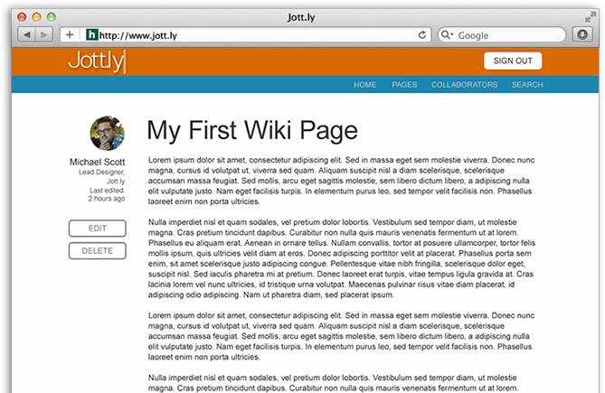
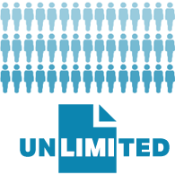

<!DOCTYPE html>
<html lang="en">
<head>

  <!-- Basic Page Needs
  –––––––––––––––––––––––––––––––––––––––––––––––––– -->
  <meta charset="utf-8">
  <title>Jott.ly</title>
  <meta name="description" content="">
  <meta name="author" content="">

  <!-- Mobile Specific Metas
  –––––––––––––––––––––––––––––––––––––––––––––––––– -->
  <meta name="viewport" content="width=device-width, initial-scale=1">

  <!-- FONT
  –––––––––––––––––––––––––––––––––––––––––––––––––– -->
<script src="//use.typekit.net/mkl3bse.js"></script>
<script>try{Typekit.load();}catch(e){}</script>
  <!-- CSS
  –––––––––––––––––––––––––––––––––––––––––––––––––– -->
  
  <!-- Skeleton -->
  	<link rel="stylesheet" href="css/normalize.css">
  	<link rel="stylesheet" href="css/skeleton.css">
  
  <!-- bxSlider -->
  	<link rel="stylesheet" href="css/jquery.bxslider.css" />

  <!-- Page CSS -->
  	<link rel="stylesheet" type="text/css" href="css/styles.css">

  <!-- Favicon
  –––––––––––––––––––––––––––––––––––––––––––––––––– -->
  <link rel="icon" type="image/png" href="images/favicon.png">
  
  <!-- bxSlider Slider
 –––––––––––––––––––––––––––––––––––––––––––––––––– -->
<script src="//ajax.googleapis.com/ajax/libs/jquery/1.10.2/jquery.min.js"></script>
<script src="js/jquery.bxslider.min.js""></script>

</head>
<body>
<header>
	<div class="container">
		<nav class="row">
			<div class="three columns"><a class="logo" href="#">Jott.l<span id="trk-logo-y">y</span></span><span class="logoblink">|</span></a></div>
			<div class="nine columns">
			<ul>
				<li><a class="current" href="#">Home</a></li>
				<li><a class="link" href="#">About</a></li>
				<li><a class="link" href="#">Contact</a></li>
				<li><a class="link" href="#">Sign In</a></li></ul></div>
  		</nav>
  		<article class="row">
			<div class="four columns marketing">
				<h1 id="mainheadline">Simple to use.<br>Easy to share.</h1>
				<h2 class="subhead">Create,revise and collaborate with anyone.<br>
					<span class="painless">Yes, it's just that painless.</span></h2>
					<a class="button CTA-button-text" href="#">Try It For Free</a>
    		</div>
			<div class="eight columns">
	    	
    		</div>
  		</article> 			    
	</div>
<div class="dropshadow">
	
</div>
</header>
<div class="container">
	<article class="testimonials">
		<div class="row">
			<div class="offset-by-one ten columns">
				<h3 class="test-headline">What You’re Saying</h3></div></div>
		<div class="row">
			<div class="offset-by-one ten columns">
				<ul class="bxslider">
  					<li><p class="test-text">The other 3rd grade teachers and I create our lesson plans together. It used to be very time consuming and such a 
  						hassle. Using Jott.ly makes it faster and easier to get it done. Leaving us all time to concentrate on the important things.</p>
						<span class="test-name-location">Carrie - Fredrickburg, VA</span></li>
  					<li><p class="test-text">With Jott.ly there are no distractions. We can focus on the content without getting bogged down with formatting. 
  						And because it is so straightforward I don’t have to spend a lot of time training my team on how to use it.</p>
						<span class="test-name-location">Owen - Los Angeles, CA</span></li>
  					<li><p class="test-text">I can write with someone on the next block or on another continent. And with Jott.ly I know my work is backed up 
  					and safe from prying eyes.</p>
						<span class="test-name-location">Miriam - Omaha, NE</span></li>
				</ul>
		</div>
	</article>
</div>
<div class="container">
<div class="features">
	<article>
		<div class="row features_Text_Background">
			<div class="four columns">
				<div><h3 class="features-headline">Easy to Use</h3></div>
				<p class="features-body">Can you type? Have you ever used a web page? Congratulations you can use Jott.ly. Jott.ly is simple to use, setup and maintain. Leaving you to focus on what matters, your content.</p>
			</div>
			<div class="four columns">
				<div><h3 class="features-headline">Distraction Free</h3></div>
				<p class="features-body">No formatting menu. No ribbons. No toolbars. Nothing to get between you and the words on the screen. Just open a document and start typing. Jott.ly keeps it simple so you can get to work.</p>
			</div>
			<div class="four columns">
				<div><h3 class="features-headline">Collaboration Simplified</h3></div>
				<p class="features-body">John’s on a Mac. Jane’s on a PC. Bob is using a tablet. Jerry is on his smartphone. Now everyone can read, edit and share content, regardless of what they are using. Setting up sharing and managing users is as easy to use as the rest of Jott.ly. </p>
			</div>
		</div>
	</article>
</div>
</div>	
<div class="container">
	<article class="row faq vert-pad">
		<div class="six columns">
					<h1 class="faq-headline">FAQ</h1>
					<p class="faq-question"> Can I export my files when I am done?</p>
					<p class="faq-answer">Yes you can save documents as standard text files. You can print right from your browser as well.</p>
					<p class="faq-question">Does everyone in my group have to have a Jott.ly account?</p>
					<p class="faq-answer">No. You can invite anyone to collaborate. You assign them a user name and password.  We provide you with a link to your document. There they can edit any document you give them access to. But if you meed someone to be able to create or manage documents in your collection they will need to sign up for a FREE Jott.ly account.</p>
					<p class="faq-question">What do you mean “active document”? </p>
					<p class="faq-answer">You can create and keep as many documents as you want, regardless of your plan. But only “active” documents can be shared and edited. This method lets you keep and access all of your work on Jott.ly.</p>
		</div>
		<div class="six columns faq-col-two">
					<p class="faq-question">How many users and documents can I have?</p>
					<p class="faq-answer">How many users and documents can I have?
For the FREE Jott.ly account you can have upto five active documents with two collaborators each. After that it depends on your needs and your plan. There are no contracts & there is a Jott.ly plan for every need. See below for a complete list of plans.</p>
					<p class="faq-question">Is my data secure?</p>
					<p class="faq-answer">You bet! Jott.ly stores all of your file data using 256-bit AES encryption. No one, not even us, can access your files without your say so. So your files are private and safe.</p>
<a class="button CTA-button-text" id="but-faq"href="#">Try It For Free</a>
		</div>
	</article>
</div>
<div class="container">
	<article class="row pricing topmargin botmargin">
			<div class="four columns price-image">
			
			<p class="price">FREE</p>
			<p class="pricing-body">Are you a small group.? Or just want to try Jott.ly out? With our free plan get access to all of Jott.ly’s features, but you are limited to <em class="price-em">five active documents</em> at a time. You can share each of those documents with up to two people.<strong class="price-strong">Try it FREE today.</strong></p>
			</div>
			<div class="four columns price-image">
			
			<p class="price">$4.99/month</p>
			<p class="pricing-body">Are you a small business, club or organization? Collaborate on meeting minutes, notes, sales pitches and anything else you need to write together. You get up to <em class="price-em">fifteen active documents</em> at a time. You can share each of those documents with up to 4 people.</p>
			</div>
			<div class="four columns price-image">
			
			<p class="price">$9.99/month</p>
			<p class="pricing-body">For even the biggest organizations and the most Herculean tasks. Whether you span the state or the globe. Get unlimited documents and unlimited collaborators. Jott.ly is the simple, affordable solution. Securely store your data with complete control over who sees what.</p>
			</div>
	</article>	
</div>
<div class="CTAstrip CTAstrip-padding">
	<div class="container">
		<div class="row CTArow-margin">
			<div class="offset-by-two eight columns">
			<h1 class="CTAstrip-headline">Get Started Today</h1>
			<p class="CTAstrip-subhead">Try it for free and see what all the fuss is about.</p>
			</div>
		</div>
		<div class="row CTArow-margin">
			<div class="offset-by-two five columns">
			<input class="u-full-width" type="email" placeholder="Enter your email address">
			</div>
			<div class="three columns CTAinput">
				<a class="button butCTAstrip CTA-button-text" id="CTAstripbut" href="#">Try It For Free</a>
		</div>	
    </div>
</div>
<footer>
<div class="container">
	<div class="row">
		   <div class="four columns footer-nav">
			   <ul>
			   	<li><a class="link" href="#">Home</a></li>
			   	<li><a class="link" href="#">About</a></li>
			   	<li><a class="link" href="#">Contact</a></li>
    		</ul>
		   </div>
		   <div class="offset-by-three five columns footer-legal">© 2015. Copyright. Jott.ly. All Rights Reserved.
			</div>
<!-- 			test -->
	</footer>
</div>
<script>
$(document).ready(function(){
  $('.bxslider').bxSlider({
  controls: false,
  adaptiveHeight: true,
  mode: 'fade'
	});
});
</script>
</body>
</html>
